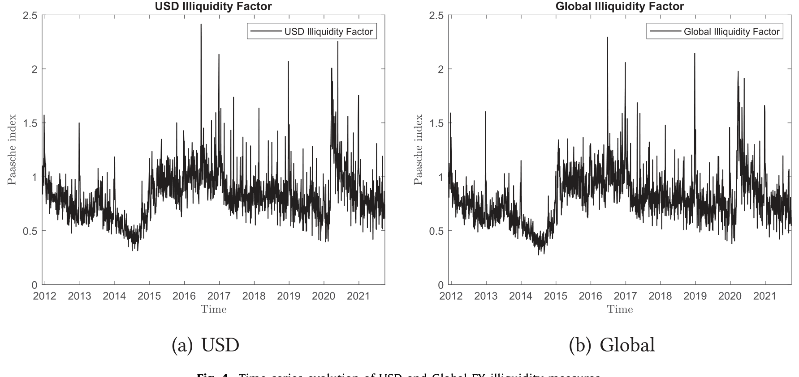
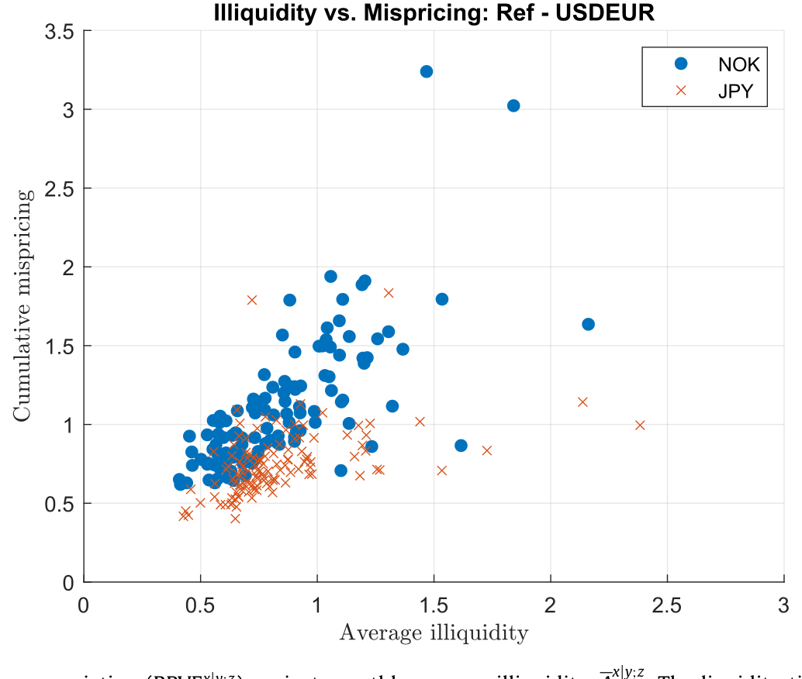
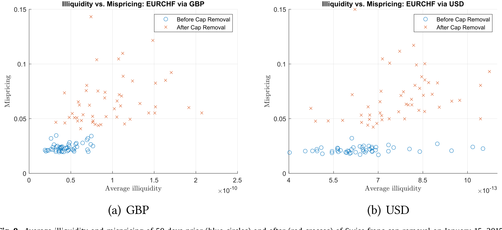
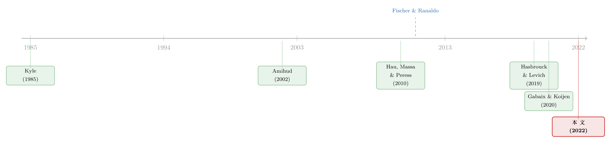

全世界最大的市场，也有「推不动」的时候——把外汇流动性拆成价格冲击
本文读的是 Ranaldo & Santucci de Magistris (2022, Journal of Financial Economics)：作者用十年 CLS 高频成交数据，把经典的 Amihud (2002) 非流动性指标「升级」成一个叫 realized Amihud 的度量——已实现波动率与成交量之比，专门刻画「一笔交易把价格推动多少」的价格冲击。他们发现，越是行情清淡、越是危机时刻，价格冲击越大；而真正贯穿全文的那句话是：流动性会「养」出价格效率，而美元的流动性最能守住这份效率——绕开美元去做三角套利，错误定价会成倍放大。
1 引言：一个大到「应该没有摩擦」的市场
先做一道直觉题。全球外汇市场每天成交 6.6 万亿美元（Bank of International Settlements, 2019），是这个星球上最大的金融市场。交易它的，几乎全是专业玩家——全球做市商、对冲基金、跨国公司的财务部门。按教科书的口吻，这样一个又大、又「聪明」的市场，应该最接近「无摩擦」的理想状态：价格随时正确，想买就买、想卖就卖，谁也别想用一笔交易把价格推歪。
可现实里，外汇是在场外（over-the-counter, OTC）一笔一笔谈出来的。它分散、不透明、还越来越碎片化。于是一个尴尬的事实是：对于这样一个庞然大物，我们其实说不清它的流动性到底有多深。
为什么说不清？因为过去研究外汇流动性，几乎只盯着一个维度——交易成本（transaction cost），也就是买卖价差。价差当然重要，但它只是流动性的一张脸。流动性还有另一张更难看清的脸：价格冲击（price impact），也就是市场深度（market depth）——你砸进去一笔量，价格会被推动多少？Kyle (1985) 早就把流动性拆成「紧度、深度、弹性」三层，价差量的是紧度，而深度和弹性，在一个去中心化的 OTC 市场里，几乎无从下手。
缺的是数据。要量价格冲击，你得知道全市场到底成交了多少量。可外汇没有一个中心化的交易所来记账，量从来就是个谜。
于是三个自然的问题摆在面前：外汇市场的流动性，该怎么量？它由什么决定？它又能不能支撑起价格效率？ 这篇论文要做的，就是把这三问一次性回答清楚。而它能回答的前提，是终于摸到了一份能代表全球外汇成交的数据——CLS。
2 一把更锋利的尺子：realized Amihud
要量价格冲击，作者没有另起炉灶，而是改造了一个金融学里被引用一万多次的老工具——Amihud (2002) 非流动性指标。
原始 Amihud 的想法极朴素：价格冲击 = 绝对收益 ÷ 成交额。同样一块钱砸下去，价格动得越多，说明市场越浅、越「非流动」。它的妙处是只需要日度的收益和成交额，连订单流都不用。可它也粗糙——用一天的「绝对收益」来代表当天的波动，噪声太大。
作者的第一处创新，是把这把尺子搬到外汇市场（此前因为没有成交量数据，几乎没人在外汇上用 Amihud）；第二处、也是更关键的创新，是用高频的已实现波动率替换掉那个粗糙的日度绝对收益。他们把它命名为 realized Amihud。
先看两块积木。第一块是已实现幂变差（realized power variation, RPV）——在 Barndorff-Nielsen & Shephard (2003) 的意义下，把一天切成许多五分钟小区间，把每个区间的绝对对数收益加总：
$$RPV_{x|y} = \sum_{i=1}^{I} \big| r_i^{x|y} \big|$$
其中 \(r_i^{x|y}\) 是货币对 \(x|y\)（\(x\) 为基准货币、\(y\) 为报价货币）在第 \(i\) 个子区间的对数收益。第二块是同一区间内以美元计的总成交量：
$$\nu_{x|y} = \sum_{i=1}^{I} \nu_i^{x|y}$$
两块一除，就是本文的核心度量：
直觉上，\(A_{x|y}\) 度量的就是「单位成交量带来多少波动」——分子是价格动了多少，分母是为此砸进去多少钱。比值越大，市场越浅、价格越容易被推动；比值越小，市场越深。它和市场深度成反比，这一点在作者放进附录 A 的那个小理论里被讲得很清楚。
2.1 模型：价格冲击从哪里来
作者在附录里搭了一个简单的理论，把这把尺子的合理性「证」了一遍。故事的主角是边际交易者的保留价格（reservation price）：每个交易者心里都有一个愿意成交的价位，这些价位因「意见分歧」（Harris & Raviv, 1993）、流动性需求、信息集和贴现因子（Glosten & Milgrom, 1985）而各不相同。正是这种保留价格的异质性，同时制造了成交量和价格波动——它们是同一个潜在因子驱动的两个产物。
模型走了三步。首先，在每个交易区间里，市场深度决定了能在供需交点上吞下多大的量，深市对应小冲击。接着，借助已实现波动理论（Andersen et al., 2001），日度波动可以被这些高频区间收益精确地非参估计出来——这正是 RPV。然后，把波动和成交量并在一起，作者证明：当区间数 \(I \to \infty\)，realized Amihud 会收敛到一个与交易者保留价格的离散程度成正比、与市场深度参数和参与者数目成反比的量。换句话说，市场越深、参与者越多，realized Amihud 越小。
由此落出三条可检验的预测：(i) 波动率与成交量同向变动，因为它们由同一个潜在因子驱动；(ii) 市场越深、参与越广，价格冲击越低；(iii) 在深市里交易的货币，会系统性地吸引更多成交量和参与者，同时享受更小的冲击。
一个值得记住的量级：模拟分析显示，realized Amihud 比传统 Amihud 精确约 10 倍，而且只要波动率不在高于 30 秒的超高频上计算，买卖价差噪声的污染可以忽略不计。这是它敢被当作「价格冲击的尺子」的底气。
3 数据：终于有人替全世界外汇记了账
度量再好，也得有数据喂。作者用的是 CLS Group 的成交数据——这是全世界最大的外汇结算系统，靠「支付对支付（payment-versus-payment, PVP）」机制替全球外汇交易做清算。它的覆盖面惊人：涉及美元和欧元的货币对，分别覆盖了 BIS 三年期调查中 85% 和 94% 以上的成交量。扣除银行间转账和被双重计算的「give-up」交易后，CLS 大约覆盖全球外汇成交的 40%（Bech & Holden, 2019）到 50%（Cespa et al., 2022）。
为了维持一个平衡面板，作者保留了 15 种货币、29 个货币对，样本期从 2011年11月 到 2021年9月，整整十年的小时级数据。提交给 CLS 的日均成交量，从 2014 年 12 月的 1.4 万亿美元，涨到样本末期的 1.83 万亿美元。
数据有它的代价。CLS 记的是结算，不是交易：结算时间晚于成交时间，且 CLS 的成交量是无方向的——它分不清谁是主动方、谁是被动方。不过作者用的是「量」而非「流」（flow），所以「无法区分买卖方向」这条限制，对本文的目的恰好无关紧要。
4 第一个发现：市场一变薄，价格就被推动
把尺子和数据合在一起，第一组结果来自时间序列。
首先是一个几乎符合直觉、却第一次被精确量出来的事实：外汇市场越薄，价格冲击越大。尽管外汇号称 24 小时不间断交易，但价格冲击每天都会在「伦敦时段」（London hours，GMT 下从伦敦早 7 点开盘到纽约晚 9 点收盘）之外悄悄抬高；当美国等主要金融中心放银行假日、交易活动被外生地抽走一块时，冲击同样上升。再往大了看，欧债危机、COVID 这些动荡期，全球外汇的价格冲击系统性地飙升（如图 4 所示）。

Figure 4: Time-series evolution of USD and Global FX illiquidity measures
接着，一个自然的问题是：这种价格冲击，和我们熟悉的那些压力指标对得上吗？作者给出的回答是肯定的——价格冲击会随交易成本、货币市场紧张、不确定性、风险厌恶一起上升。一个具体量级：交易成本每上升 1%，价格冲击大约上升 0.20%。更让人放心的是，他们用 EBS 的超高频订单与成交数据算出有效价差、订单流价格冲击这些「基准」流动性度量，发现 realized Amihud 与它们高度相关——说明这把新尺子确实量准了价格冲击。
然后是横截面，也是全文最有画面感的一组对比。最常被交易的货币对，比如 EURUSD、USDJPY，价格冲击极小；而那些少有人问津的交叉盘（cross rate），比如 CADJPY、USDDKK，冲击要大上多达 200 倍。换算成「推动力」就更直观了：要让汇率移动一个标准差，EURUSD 需要砸进去高达 1300 亿美元，而 CADJPY 只需要不到 5 亿美元。
这背后是一条向下倾斜的货币需求曲线（Hau et al., 2010）——只不过，在美元之外，这条曲线更陡。一个国际投资者若把交易绕道美元，平均承受的价格冲击最小；换成欧元、日元、英镑，冲击则节节升高。这就是所谓的「美元主导（dollar dominance）」：用美元当载体货币（vehicle currency），恰恰是为了规避不利的价格冲击（Somogyi, 2021）。（关于美元为何这样强，可参见《美元为什么强？——把一条汇率曲线拆回它的「供给与需求」》。）
5 真正关键的一步：流动性如何「养」出价格效率
如果文章到此为止，它也就是一篇「外汇流动性测量」的好论文。但真正关键的一步在于第二部分：作者要追问，流动性到底能不能、又是怎样支撑起价格效率的。
他们选的切口很巧——「三角」无套利条件（triangular no-arbitrage）。直接的 EURUSD 报价，应该等于绕一圈复制出来的合成汇率（比如 EURGBP × GBPUSD，外加另外六组「三元组 triplet」）。如果市场是有效率的，同一笔基本面交易在两条路径上应当是唯一价格；一旦出现偏离，就说明套利活动不足、摩擦（尤其是非流动性）在作祟。作者把这种偏离的累积方差叫 RPVE，用它来度量错误定价。
于是反转出现了：错误定价系统性地随非流动性上升。享受着更小平均冲击的货币，能维持更高的价格效率（如图 6 所示）。一个具体对比——一个挂着挪威克朗的非流动 EURUSD 三元组，对错误定价的敏感度，大约是挂着日元的流动三元组的 4 倍。再把欧元路径和美元路径分开看：通常在更薄市场里交易的欧元货币，把非流动摩擦都集中到了自己身上，由此引发套利违约；而充当载体货币的美元对，基本与套利偏离脱钩。 一句话，美元的流动性，是维系价格效率的关键。

Figure 6: Monthly cumulative pricing error variation (RPVE x y ) against monthly average illiquidity, A . The liquidity time series for each currency
这一步漂亮，但也最容易被人挑刺：货币 A 的非流动和错误定价同时升高，会不会只是因为它们都被某个共同的全球因子推着走？作者用了两招来回应。
第一招，处理内生性。 他们借用 Gabaix & Koijen (2020) 的颗粒工具变量（granular instrumental variable, GIV）思路：拿日度流动性度量的「规模加权平均」减去「等权平均」，利用货币对流动性在横截面上的巨大异质性，把个别货币的特质性流动性事件分离出来，作为工具。
第二招，理清因果方向。 流动性和错误定价绑在一起，到底是谁带谁？作者上了一个向量误差修正模型（vector error-correction model, VECM）（思路源自 Granger, 1986 与 Johansen, 2008），结果很干净：两者确实存在一个正向且紧密的长期均衡关系，而当冲击打破均衡后，是流动性在调整、把系统拉回均衡——不是反过来。这就把「流动性 → 价格效率」的方向钉得更实。
5.1 一个外生冲击：瑞郎脱钩
为了让因果更可信，作者还找了个教科书级的自然实验——2015年1月15日瑞士央行突然取消瑞郎对欧元的汇率上限（cap）。和银行假日那种「短暂、可预期」的清淡不同，这次冲击是意料之外且持久的。结果清清楚楚：在脱钩之后，EURCHF 的流动性和价格效率双双、且持续地受损，两者的相互依存关系被进一步坐实（如图 9 所示）。

Figure 9: Average illiquidity and mispricing of 50 days prior (blue circles) and after (red crosses) of Swiss franc cap removal on January 15, 2015
6 文献脉络
把这条线捋一捋，会更清楚这篇论文站在哪。
最上游是两块基石：Kyle (1985) 把市场流动性拆成深度、紧度与弹性，给了「价格冲击」一个理论身份；Amihud (2002) 则给出一个朴素到只需日度数据的非流动代理，从此被引用上万次，成了股票市场量「价格冲击」的默认工具。
接着，这套工具想搬到外汇上，却被一个老问题卡住——没有全市场的成交量数据。于是早期的外汇流动性研究只能退而求其次：要么钻进交易商间市场（EBS、Reuters）做订单流，要么只用买卖价差来近似交易成本。与此同时，Hau et al. (2010) 给出了「货币需求曲线向下倾斜」的关键证据，为后来「美元主导」的故事埋下伏笔。
转折点是 CLS 数据的出现。Fischer & Ranaldo (2011) 第一次用 CLS 看央行决策日的全球外汇成交；Hasbrouck & Levich (2019) 第一个把 Amihud 指标用到外汇上（不过只用了 2010/2013/2016 三个 4 月的结算数据），随后 (2021) 又分析了外汇现货市场的网络结构。Cespa et al. (2022) 用 CLS 成交量做交易策略，Somogyi (2021) 用「规避价格冲击」解释美元主导。

这篇论文的位置就清楚了：它接过 GIV（Gabaix & Koijen, 2020）这样的新工具，第一次在一个相对大的货币对横截面、长达十年的样本上，把外汇流动性与无套利条件系统地联系起来——既精修了 Amihud 度量（realized Amihud），又把「流动性如何养出价格效率」讲成了一个有因果方向的故事。
顺带一提，同一研究群体在做市商一侧也有呼应之作：当做市商的「风险预算」绷紧时，价格与成交量会开始各说各话（Huang et al., 2022），可与《做市商的「风险预算」一旦绷紧，价格和成交量就开始各说各话》对读。而「央行亲手掰断套利杠杆」导致同一现金流两个价格的故事，则与本文的三角套利违约遥相呼应（见《同一份现金流，两个价格：当央行亲手掰断了套利这根杠杆》）。
7 评论与延伸（Q&A + 研究方向）
(a) 几个可能的疑问
Q：realized Amihud 和原始 Amihud 到底差在哪，凭什么说更好？
差在分子。原始 Amihud 用一天的绝对收益代表当天的波动，噪声大；realized Amihud 把一天切成五分钟区间，用已实现幂变差精确估计波动。模拟显示它的精度约高 10 倍，且只要采样不细于 30 秒，几乎不受买卖价差噪声污染。本质上，它把「价格冲击」从一个粗糙的日度比值，升级成了一个高频、可观测、易计算的量。
Q：CLS 记的是结算而不是交易，量又是无方向的，会不会带偏结果？
这是最该警惕的地方。结算时间晚于成交、且 CLS 区分不出主动/被动方。但本文用的是成交量而非订单流，「无方向」这条限制恰好不影响价格冲击的度量。结算与成交的时间错位确实存在，Hasbrouck & Levich (2019) 估计约
95.3%（按 5 倍价差口径）的 CLS 交易能在 30 秒内匹配上，污染有限——但读者仍应把它当作一个测量层面的保留意见。
Q：「美元最有流动性」会不会是同义反复——交易多所以流动，流动所以交易多？
这正是内生性担忧。作者用 GIV 和 VECM 来切断这种循环：GIV 用横截面异质性分离出特质性流动性事件，VECM 表明是流动性在调整以恢复均衡。瑞郎脱钩这个外生冲击进一步佐证了方向。当然，这些都是「缓解」而非「根除」——美元的载体货币地位本身是高度内生的均衡结果。
Q：三角套利违约真的是「错误定价」，还是只是不同平台报价的测量噪声？
作者诉诸的是操作效率（operational efficiency）而非信息效率——即同一基本面价值能否在唯一价格上成交、价差能否被无摩擦地迅速抹平。他们用高频数据构造 RPVE，并且关注违约如何随非流动性系统性变化，而不是单看某个时点的偏离绝对值。把违约和流动性的协动作为证据，比孤立地看噪声更有说服力。
Q：流动性→价格效率，这个方向是不是被 VECM「假设」出来的？
VECM 不预设方向，而是让数据说话：估计出的误差修正项显示，是流动性这一边在向均衡回归。这比单纯的同期相关强，但 VECM 的识别仍依赖于变量的协整结构是否被正确设定，对此应保持谨慎。
Q：这套结论对国际投资者和政策有什么用？
对投资者，它把「绕道美元」从一句经验变成了可量化的成本节省——交叉盘的冲击可高达美元盘的 200 倍。对政策制定者，它提示在危机或非常规货币政策（如外汇干预）时，非美元货币的流动性最先、最深地枯竭，价格效率也随之受损。
(b) 几个可能的研究问题与提案
1. 把 realized Amihud 搬到公司债市场。 【经济故事】公司债同样是 OTC、同样缺全市场成交量、同样关心价格冲击。把「已实现波动 ÷ 成交量」的思路用到 TRACE 逐笔数据上，能得到一个比传统日度 Amihud 更干净的债券价格冲击度量，进而研究信用利差里到底有多少是流动性溢价。 【可行性】中。TRACE 有逐笔成交，可构造分钟级 RPV；难点在于公司债交易稀疏，高频区间常常没有成交，需要处理「零成交区间」与报告延迟。
2. 外资持有人与货币-债券的联合流动性。 【经济故事】外资持有美国公司债时，承受的是「债券流动性 × 汇率流动性」的叠加摩擦。本文已证非美元路径的冲击更陡——那么当美元流动性枯竭时，外资集中的债券是否承受了额外的抛售冲击？这把「美元主导」从外汇延伸到了信用市场。 【可行性】中。需要外资持有数据（如 TIC、Morningstar 基金持仓）配 TRACE，识别可借危机期或瑞郎式外生事件做事件研究。
3. 用三角套利违约作为「资金压力」的高频指标，预测信用利差。 【经济故事】本文表明三角违约随非流动性放大，而非流动性又与货币市场紧张同向。那么三角违约能否当作一个实时的全球资金压力温度计，领先于信用利差的走阔？ 【可行性】高。CLS/EBS 可算违约，信用利差用 ICE/Markit，纯时间序列预测即可上手，识别上更像「预测性」而非「因果性」研究。
4. 在新兴市场货币上复制瑞郎脱钩式的政策冲击。 【经济故事】许多新兴市场有过突然的汇率制度切换（脱钩、扩大波幅、资本管制）。这些是检验「流动性—效率」相互依存的天然实验，且新兴货币本就处在更陡的需求曲线上，效应可能更剧烈。 【可行性】中到低。事件清单容易整理，但 CLS 不覆盖人民币、卢布等关键新兴货币，数据是硬约束，可能要退而求其次用 EBS 或交易商报价。
我的判断
这篇论文最实在的贡献，是把外汇流动性研究从「只看价差」推进到「认真量价格冲击」，并且给了一把可观测、易计算、且经过模拟与 EBS 双重验证的尺子——realized Amihud。它对 Amihud (2002) 那句「会有更精细的度量，只要有微观结构数据」的预言，算是一个迟到二十年的兑现。而把流动性与三角无套利违约绑在一起、再用 GIV 与 VECM 钉住因果方向，让「美元流动性维系价格效率」这个结论站得相当稳。
对识别，我仍有两点保留。其一，CLS 「结算≠交易、量无方向」的特性，意味着所有高频度量都建立在一层匹配误差之上，作者引用的 95% 匹配率是安慰但非证明。其二，GIV 的有效性依赖「规模加权减等权」真能剥离出特质冲击，而货币流动性的共同因子结构远比股票复杂——美元同时是载体货币、避险资产和计价单位，它的「特质性」本身就难以定义。
后续我最想看到的，是把这套框架接到信用市场和外资持有人上：当美元流动性枯竭，承压最重的究竟是外汇、是国债、还是那些被外资重仓的公司债？本文已经把「美元主导」从汇率讲到了套利，下一步自然是讲到信用利差。
参考文献
- Amihud, Y. (2002). Illiquidity and stock returns: cross-section and time-series effects. Journal of Financial Markets 5, 31–56.
- Andersen, T.G., Bollerslev, T., Diebold, F.X., Labys, P. (2001). The distribution of realized exchange rate volatility. Journal of the American Statistical Association 96(453), 42–55.
- Barndorff-Nielsen, O.E., Shephard, N. (2003). Realized power variation and stochastic volatility models. Bernoulli 9(2), 243–265.
- Bech, M.L., Holden, H. (2019). FX settlement risk remains significant. BIS Quarterly Review, 48–50.
- Cespa, G., Gargano, A., Riddiough, S.J., Sarno, L. (2022). Foreign exchange volume. Review of Financial Studies 35, 2386–2427.
- Fischer, A.M., Ranaldo, A. (2011). Does FOMC news increase global FX trading? Journal of Banking & Finance 35.
- Gabaix, X., Koijen, R.S.J. (2020). Granular instrumental variables. Working paper.
- Harris, M., Raviv, A. (1993). Differences of opinion make a horse race. Review of Financial Studies 6, 473–506.
- Hasbrouck, J., Levich, R.M. (2019). FX market metrics: new findings based on CLS bank settlement data. NBER Working Paper No. 23206.
- Hasbrouck, J., Levich, R.M. (2021). Network structure and pricing in the FX market. Journal of Financial Economics 141(2), 705–729.
- Hau, H., Massa, M., Peress, J. (2010). Do demand curves for currencies slope down? Evidence from the MSCI global index change. Review of Financial Studies 23(4), 1681–1717.
- Huang, W., Ranaldo, A., Schrimpf, A., Somogyi, F. (2022). Constrained dealers and market efficiency. University of St. Gallen Working Paper.
- Kyle, A.S. (1985). Continuous auctions and insider trading. Econometrica 53(6), 1315–1335.
- Ranaldo, A., Santucci de Magistris, P. (2022). Liquidity in the global currency market. Journal of Financial Economics 146, 859–883.
- Somogyi, F. (2021). Dollar dominance in FX trading. Working paper.